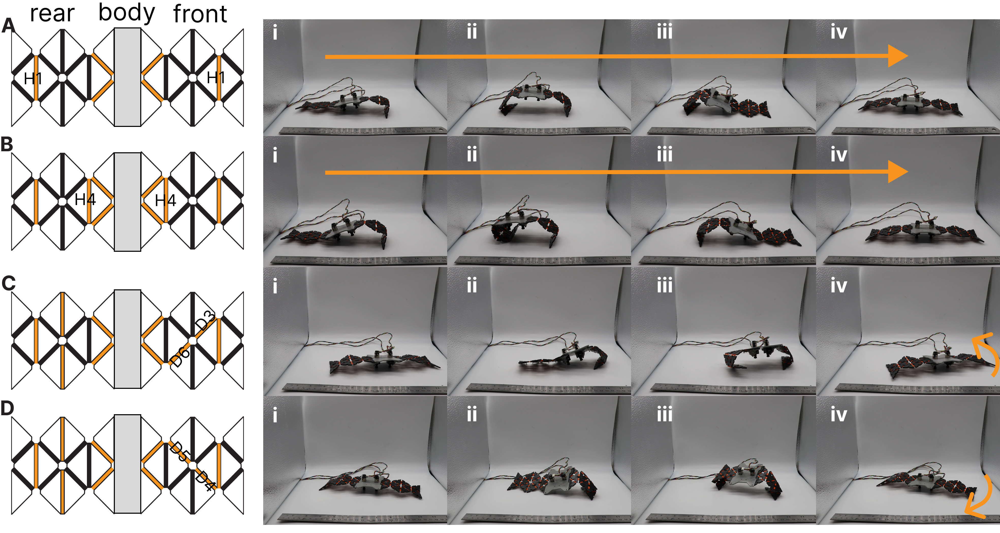
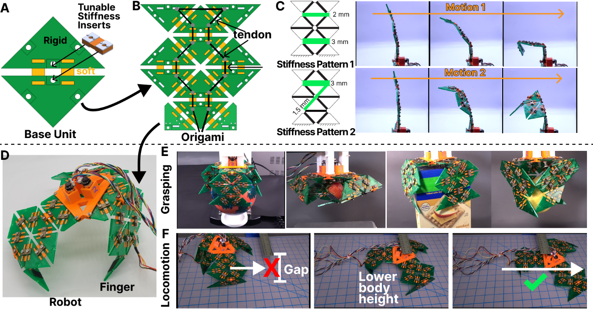
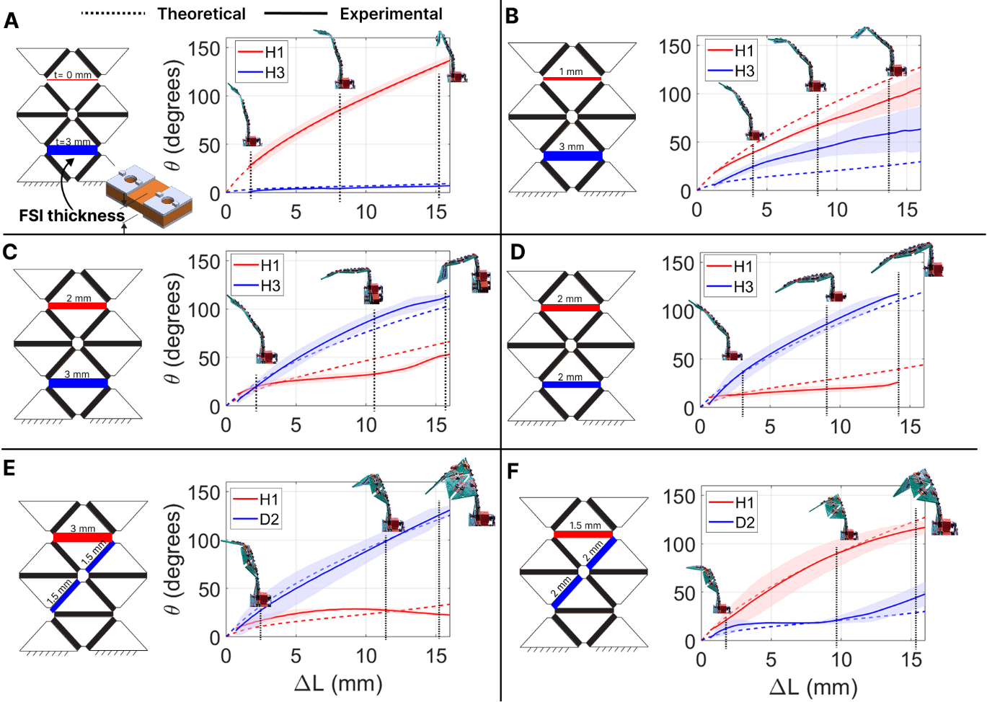
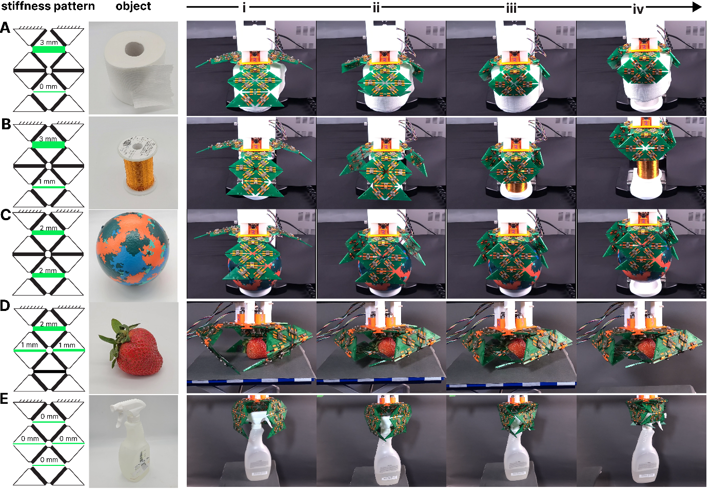
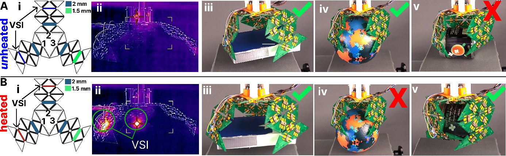
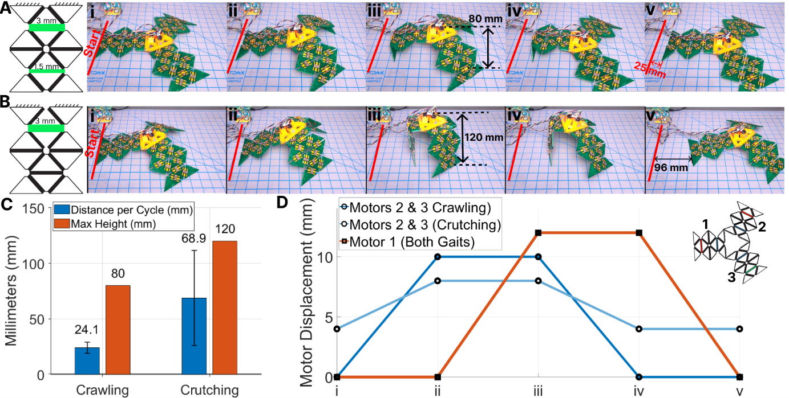
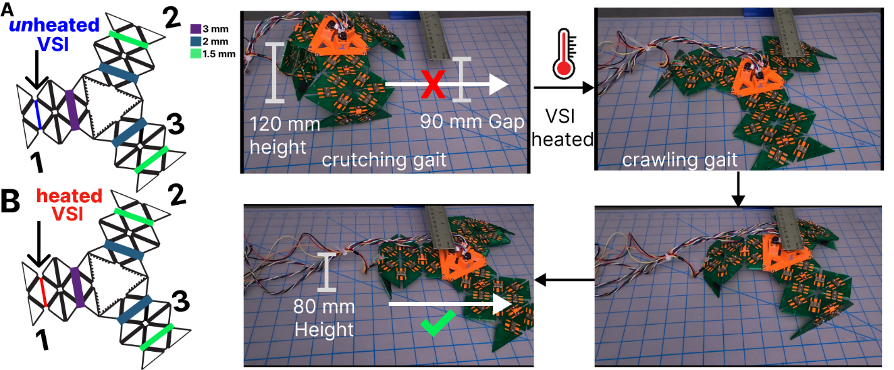
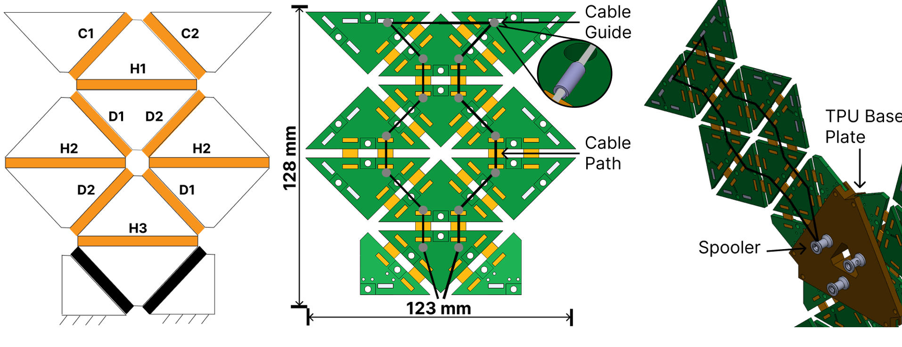
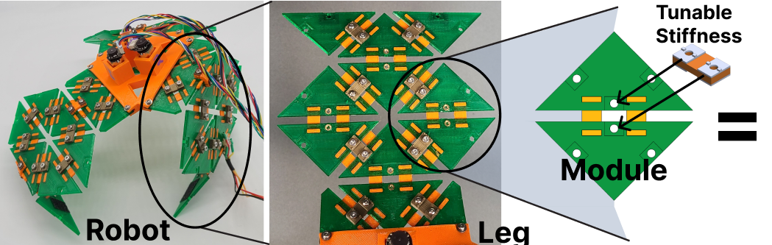
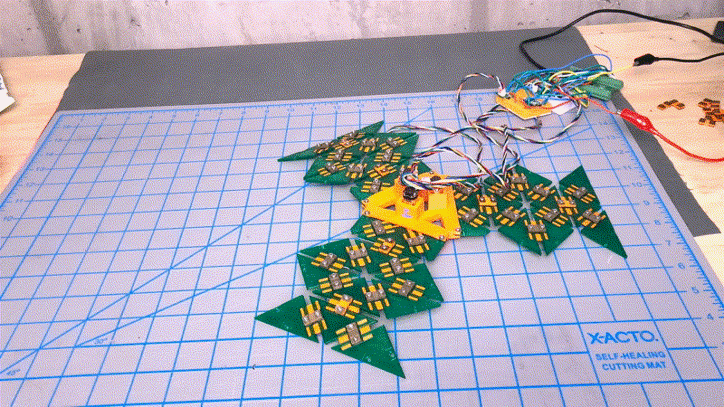

What this page covers
Printed origami mechanisms with programmable stiffness.
The project sequence shows how I use printed origami geometry, tendon routing, and joint stiffness to change motion, grasping, and locomotion across both precursor hardware and the later modular stiffness-insert robot.
- Precursor: PLA/TPU Yoshimura modules with manual locking inserts and force characterization.
- Published extension: fixed and variable-stiffness inserts used to redistribute bending in the same printed origami body.
- Robot behavior: grasping, locomotion, gait switching, encoder cable motors, PID heater loops, and ESP32 control code.
Precursor work
Multimaterial 3D-printed origami with selective locking joints, proving programmable motion under one cable-driven actuator.
Peer-reviewed paper
Modular stiffness-programmable origami with locking inserts, fixed stiffness inserts, and active SMP/PVC/SMP variable-stiffness inserts.
Mechatronics scope
CAD, multimaterial FDM, tendon routing, motorized cable control, stiffness tuning, modeling, and robot-level validation.
Selective locking precursor
Multimaterial 3D-printed origami with programmable motion.
The precursor project established the modular-origami engineering base: a modified Yoshimura pattern, 12 joints, 8 functional bending joints, PLA faces, 85A TPU hinges, and locking inserts that select different motion paths under the same cable actuation.

- Unit geometry: each isosceles right triangular face uses 26 mm legs, 2.5 mm rigid thickness, and a 3 mm soft-joint gap to allow near-flat folding while limiting torsion.
- Fabrication: directly printed as a multimaterial FDM structure on a Prusa XL using PLA rigid faces, 85A TPU joints, 0.15 mm layers, and gyroid infill.
- Origami architecture: 12-joint modified Yoshimura pattern with 12 triangular plates; H1-H4 and D3-D6 functionally affect bending.
- Actuation: one cable routed through four heat-inserted eye-hook guides, driven by Pololu DC motor spoolers.
- Control hardware: Raspberry Pi Pico, Pololu dual motor driver, and micrometal gearmotor encoders controlled cable length.
Programmable motion and force characterization
The precursor force tests turn visual reconfiguration into measured behavior. Different locking patterns do not just change the robot's shape; they change how much cable force is required and where the structure stores elastic energy.
Single actuator, multiple motions
Five locking patterns produced horizontal bending, finger-like two-joint bending, diagonal twisting, partial folding, and full folding under the same cable pull.
Stiffness affects force budget
Single-joint horizontal bending required more force than distributing the motion across paired horizontal joints, showing why insert selection matters for actuator sizing.
Unlocked joints can help
In diagonal folding tests, adding an extra unlocked joint lowered the force required for large cable displacement because the structure could collapse through a more compliant path.


Grasping and locomotion from the same modules
The selective-locking work established a modular structure that can be biased toward grasping, folding, twisting, forward locomotion, or turning. Fully unlocked modules conform around compliant or curved objects; locked patterns add the geometry needed for scooping, box compression, pincer grasping, and directional gait bias.



Modular origami paper
Stiffness inserts turn manual locking into a modular control architecture.
The peer-reviewed paper keeps the multimaterial printed origami foundation but makes stiffness a swappable and controllable subsystem. The same joint can be locked, discretely tuned with an FSI, or thermally softened with a VSI, creating a robot platform with repeatable mechanical states.

- Base unit: PETG rigid panels and TPU compliant joints form a soft-rigid printed origami structure.
- Locking insert: PLA insert prevents bending between adjacent rigid faces.
- Fixed stiffness insert: TPU layer sandwiched between PLA plates; TPU thickness programs discrete stiffness levels.
- Variable stiffness insert: SMP-PVC-SMP sandwich with embedded thermistor and resistive heating wire for closed-loop thermal stiffness control.
Model validation and stiffness-programmed behavior.
The peer-reviewed paper adds a model of tendon-driven bending using torsional spring mechanics and cable tension analysis, then validates it against measured joint angles. Insert stiffness redistributes bending across the same printed body and the same tendon route.
Localized bend
With one horizontal joint left compliant and a neighboring joint stiffened, bending concentrates at the compliant joint.
Shared bend
Adding intermediate stiffness redistributes the same tendon motion across multiple joints instead of forcing one crease to absorb most of the motion.
Twist versus curl
Changing the relative stiffness of horizontal and diagonal joints switches the finger between splaying, twisting, and curling behaviors for grasping.

Why it matters
These tests frame the robot as a controllable mechanism. Insert selection changes the motion path without changing the motor, cable routing, or printed base structure.
The model also identifies a real design constraint: tendon friction and tension-ratio assumptions become important when multiple joints bend by similar amounts.
Three-finger grasping and VSI-enabled reconfiguration.
The modular robot uses three origami fingers arranged around a compliant TPU palm. Each finger is driven by a geared DC motor with an integrated encoder, while MOSFET drivers and PID temperature control set VSI stiffness. The main result is object-specific grasping from the same finger geometry.


Locomotion: crawling, crutching, and active gait switching.
The same origami fingers are reused as legs. Fixed insert patterns define a lower crawling gait and a taller crutching gait, while heating a VSI switches the body into a lower posture for gap traversal.


Embedded controller
ESP32 Bluetooth C++ runs wireless gait and heater control.
The ESP32 code demonstrates remote gait selection, encoder-based cable positioning, and closed-loop heater control around a real tendon-driven origami mechanism.
Command layer
Bluetooth commands select SHIMMY, CRUTCH, CRAWL, STOP, or numeric arrays for cable targets and heater setpoints.
Actuator layer
Three motors use encoder feedback, LEDC PWM, phase control, millimeter-to-count conversion, and deadbanded target seeking.
Thermal layer
Two thermistors feed beta-model temperature estimates and PID outputs for active VSI heater PWM.



What this demonstrates
This project now reads as a printed-origami mechanism family: manual locks establish programmable motion, FSIs add calibrated passive stiffness, and VSIs add active thermal stiffness control.
The composite SMP variable-stiffness robot is split into its own page because it uses a different body material and stiffness-control strategy, even though it shares the origami structure lineage.